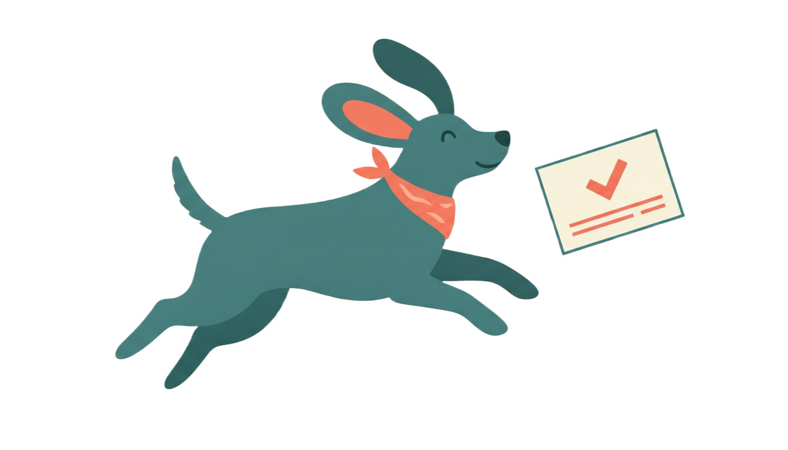

Indie dog · 3 years old · Owner: Aman Sheikh
Administered at Cloud9 Pet Clinic. Next booster: 4 Sep 2026.
Auto-extracted by AIDiagnosed as mild gastritis. Prescribed a 3-day course of antacids.
Auto-extracted by AIGiven at home, logged manually.
Manually added